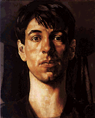

Heaven On Earth
Heaven On Earth
|
Sir Stanley Spencer and the face of god

This month, we give a meaningful nod to Billy Corgan and the rest of the Smashing Pumpkins for donating the entirety of their ticket sales--huge, lovely piles of cash--from each of their gigs to local non-profits that aid youth. Huzzah to that! We find this to be in sharp contrast to the Rolling Stones, who had cancelled their European summer tour because those (evidently) poverty-stricken rockers wouldn't have made enough dosh. It looks as though Mick and the boys may never make our saint's list; certainly, this season's dreary macho hit from them says it often enough. This month, however, full-blown sainthood alights on the slim (read: dead) shoulders of Sir Stanley Spencer, a British painter who truly believed that his small English hometown of Cookham was heaven on Earth, who assayed to convey his sense of the spiritual in the everyday through his work, whose paintings can be seen in one rare gorgeous swoop--having not been shown in one collection in the U.S. since 1981--at San Francisco's Palace Legion of Honor through Sept. 6, and whose love for the wrong woman changed his life forever. Though Spencer (1891-1959) was best-collected in his lifetime for the stunningly meticulous en plein air paintings he made of the bucolic landscape surrounding his home (he contemptuously called those works "potboilers" and made them solely for money), his serious paintings have been rightly lauded for the sensuous religiosity with which they were made. Depicting the Last Supper as a bread-breaking in a local factory, the Crucifixion as occurring on a Cookham roof, and the Resurrection as the raising of a trash collector--Spencer's eccentric spirituality also lingered over the female form. And what a form. In the early 1930s, Spencer was married to his first wife Hilda, with whom he had two children. Enter one Patricia Preece, the lover of painter Dorothy Hepworth. As a young woman, Preece--née Ruby Preece--had been swimming in a lake on the estate of librettist W.S. Gilbert when she found herself caught in some reeds. The elderly Gilbert, smitten by her charms, had dived into the cool waters to rescue her, suffering a fatal coronary in reward for his exertions. After this scandal, Ruby renamed herself Patricia and entered London's Bohemian world, where she met Hepworth and, whether intentionally or not, continued mowing down hapless souls. Hepworth's father supported the couple, but when he died, they fell on hard times. Preece--who passed the shy Hepworth's paintings off as her own, receiving rave responses from critic Clive Bell and selling the work under this false name to writer Virginia Woolf--cast an avaricious eye on Spencer, whose wife was away on a religious retreat with their children. She seduced him, and he began to support the women. Eventually, Preece convinced Spencer to divorce Hilda, marry her, and sign his home over to her. He did, gamely inviting Hilda--whom he mourned all the rest of his life--along for the honeymoon with himself, Preece, and Hepworth. Hilda refused; and essentially so did Preece--adamantly never consummating the marriage nor living with Spencer. But she did allow him to paint her, resulting in a series of six fleshy and unblinking nude portraits whose tones and corporeal substance directly influenced acclaimed painter Lucian Freud and from which few viewers can easily turn away. Tracing every sinew, spider vein, eyelash, and strongly rippled thigh in these oddly proportioned passion plays, Spencer shoves Preece into a corner of the canvas, mimics her hips with a raw leg of mutton, and depicts himself, nude and longing, squatting over her figure with a sad hunger. Preece never divorced Spencer, and was glad enough to claim her title as Lady when he was knighted months before his death. Hilda had died years before, and Spencer--who continued to write Hilda daily letters, sometimes numbering upwards of 100 pages at a time--constructed a homespun religious devotion to her. Who is to say if Sir Stanley Spencer suffered at the hands of Patricia Preece? The paintings that he made of her remain some of the most spectacularly rendered portraits of the 20th century. He was an odd figure in the village of Cookham, a true English eccentric, indulged by the village people as he pushed a baby carriage of painting supplies through the streets to potboil up a work that would buy silks, velvets, and delicate food for his second wife.
You don't have to be dead to be a saint. Send us your nominations for those souls whom you deem worthy of eternal adoration, swell holidays, trinkets baked in cakes, and a Get Out of Hail (Marys) Free card good for escaping mortifications of the flesh.
Back to the Table of Contents.
Surf the Boulevards network
to other great alternative
content sites.
|